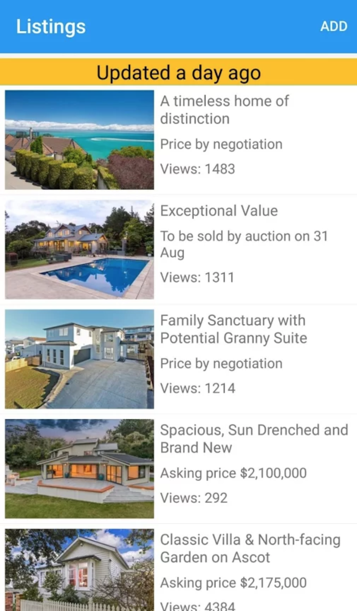
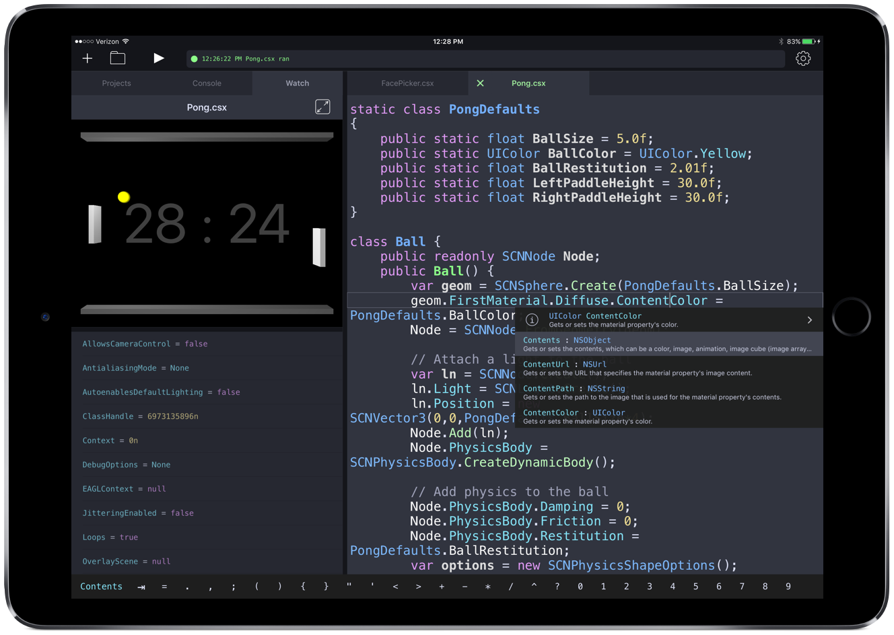
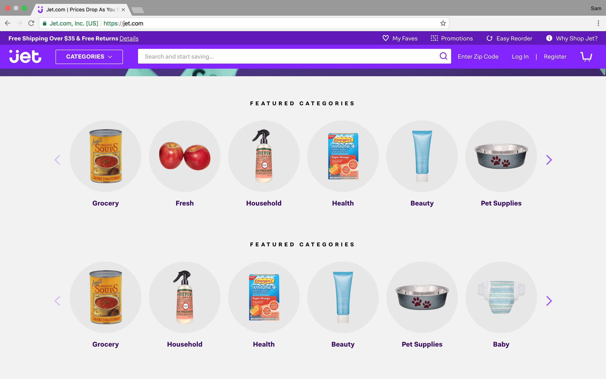

Multiple items
val string : value:'T -> string
Full name: Microsoft.FSharp.Core.Operators.string
--------------------
type string = System.String
Full name: Microsoft.FSharp.Core.string
val string : value:'T -> string
Full name: Microsoft.FSharp.Core.Operators.string
--------------------
type string = System.String
Full name: Microsoft.FSharp.Core.string
val add : x:int -> y:int -> int
Full name: Index.add
Full name: Index.add
val x : int
val y : int
val add3 : (int -> int)
Full name: Index.add3
Full name: Index.add3
module Seq
from Microsoft.FSharp.Collections
from Microsoft.FSharp.Collections
val head : source:seq<'T> -> 'T
Full name: Microsoft.FSharp.Collections.Seq.head
Full name: Microsoft.FSharp.Collections.Seq.head
type bool = System.Boolean
Full name: Microsoft.FSharp.Core.bool
Full name: Microsoft.FSharp.Core.bool
val set : elements:seq<'T> -> Set<'T> (requires comparison)
Full name: Microsoft.FSharp.Core.ExtraTopLevelOperators.set
Full name: Microsoft.FSharp.Core.ExtraTopLevelOperators.set
val ignore : value:'T -> unit
Full name: Microsoft.FSharp.Core.Operators.ignore
Full name: Microsoft.FSharp.Core.Operators.ignore
val unbox : value:obj -> 'T
Full name: Microsoft.FSharp.Core.Operators.unbox
Full name: Microsoft.FSharp.Core.Operators.unbox
val filter : predicate:('T -> bool) -> source:seq<'T> -> seq<'T>
Full name: Microsoft.FSharp.Collections.Seq.filter
Full name: Microsoft.FSharp.Collections.Seq.filter
val iter : action:('T -> unit) -> source:seq<'T> -> unit
Full name: Microsoft.FSharp.Collections.Seq.iter
Full name: Microsoft.FSharp.Collections.Seq.iter
Intro to F#
Why F# is the best FP Language
with Sam Williams
Twitter: @willsam100
Blog: http://codingwithsam.com
all opinions are my own
What I'll Cover
- Who Microsoft is Today
- F# for OOP
- F# for FP
- F# for production
Microsoft
Any Developer, Any App, Any Platform
Microsoft Research
- Don Syme -> F#
- Simon Peyton Jones -> Haskell
It works everywhere
- Mac/Linux/Windows
- Choice of IDEs
- Interop with C#
F# - OOP
It's cleaner to read
- Very short syntax
- NO semi-colons
- NO return keyword
- NO curly braces
- NO new keyword
- NO constructor
Defining a class
1: 2: 3: 4: 5: 6: |
|
Smarter type system

Defining a class
1: 2: 3: 4: 5: 6: |
|
Unit testing
A Safe way to get started with F#
Clean unit tests
- Use type inference
- Move to a functional paradigm
- Simple abstractions
Testing with F#
- NUnit has been used
- Works with IDEs (VS for Mac/Windows)
- Add a unit test project, select F# for language
unit tests with F#
1: 2: 3: 4: 5: 6: 7: 8: 9: 10: 11: 12: 13: 14: 15: 16: |
|
unit testing
Building a DSL
- Domain Specific Language (DSL)
- Defines a language/terms for the specific domain
- Simple DSLs can be expressed in code
unit testing
Without 'enterprise' speak
FP is better than OOP
unit testing
Chaining: Page Object Model (POM)
1: 2: 3: 4: |
|
unit testing
Chaning: Builder
1: 2: 3: 4: 5: |
|
unit testing
Chaning: LINQ
1: 2: 3: 4: 5: |
|
unit testing
F# POM
1: 2: 3: 4: |
|
F# syntax
Piping
1: 2: 3: 4: 5: 6: |
|
F# syntax
Partial application
1: 2: 3: 4: 5: 6: |
|
unit testing
Building a DSL
1: 2: 3: 4: 5: 6: 7: 8: 9: 10: 11: 12: 13: |
|
unit testing
Building a DSL
1: 2: 3: 4: 5: 6: 7: 8: 9: 10: 11: 12: 13: 14: |
|
Building on our unit tests
A bigger unit test
1: 2: 3: 4: 5: 6: 7: 8: 9: 10: 11: 12: 13: 14: 15: |
|
We have been using the Functional paradigm
- Code is data
-
A function can:
- take in a function
- return a function
Domain modelling

Domain modelling
1: 2: 3: 4: 5: 6: 7: 8: 9: 10: |
|
Modelling logical OR
Choice Type
1: 2: 3: 4: |
|
Microsoft missed mobile
but
F# is supported by Xamarin

Modelling Todo app
- Demo
- Simple UI
- Native for both iOS & Android
- Lots of shared code
- F# for domain modelling
Modelling Todo app
Status
1: 2: 3: 4: |
|
Modelling logical AND
F# Record
1: 2: 3: 4: 5: 6: 7: 8: |
|
Modelling logical AND
Update F# record
1: 2: 3: |
|
Adding a simple model
F# record
- equality defined
- immutable
- F# does not have type classes
Model demo
1: 2: 3: 4: 5: 6: 7: 8: 9: 10: 11: 12: 13: 14: 15: 16: |
|
Model demo
1: 2: 3: 4: 5: 6: 7: 8: 9: 10: 11: 12: 13: 14: 15: 16: |
|
Domain modelling
- Extend the app
- Button to clear completed older than 1 day
Domain modelling
Choice + Data
1: 2: 3: 4: |
|
Domain modelling
Pattern Matching
1: 2: 3: |
|
Domain modelling
Update the app
- Only show completed for a day
- use pattern matching
- use
StatuswithDateTime
View Model
App update
1: 2: 3: 4: 5: 6: 7: 8: 9: 10: 11: 12: 13: |
|
F# In Production
My App
F# In Production
My App
- House Hawk
- No mutable collections
- No mutable variables
- Assignment only used to update UI controls
F# In Production
An IDE
F# In Production
An IDE
- Called 'Continous'
- IDE availbe on iPad
- C#/F# Apps
F# In Production
An E-Commerce Site
F# In Production
An E-Commerce Site
- Jet.com
- Competing with Amazon
- F# with microservices
- Runs on Azure
- Purchased by Wallmart for $3 billion
Learning FP
http://FSharpForFunAndProfit.com http://blog.ploeh.dk/ http://fsharp.org
Wrapping up
F# is...
- Micosoft isn't evil
- F# is great for OOP or FP
- F# is for production
- F# is for mobile
- Learning F# is fun
Thanks for your time
tweet me for more: F#, slides, demo code
@willsam100
In which decade were these items first sold in?


Functional Programming
- Discovered in 1930s
- Alonzo Church/Alan Turing
- Called the lambda calculus